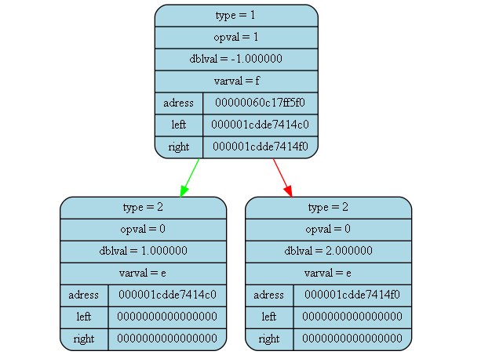

<pre>
<pre>

Tree dump from (int main()) at (main.cpp) at line (15):
tree [00000060c17ff5c0] "&tree" at (int main()) at (main.cpp)(12):
{
	status   = 1
	error    = 0
	size     = 3

	((1.000000)+(2.000000))
}
